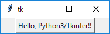
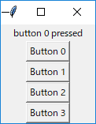
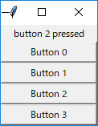
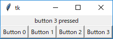
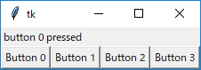
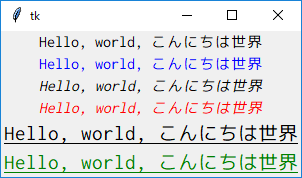
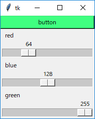
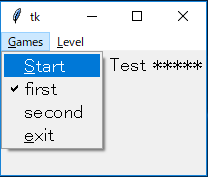
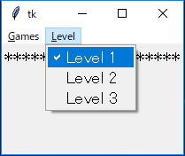

●Hello, Python3/Tkinter!!
- Tkinter は Python で GUI (Graphical User Interface) を扱うための標準的なライブラリ
- Tcl/Tk の Tk (Tool Kit) の部分を Python から利用できるようにしたもの
- Windows の場合、Tkinter は Python に同梱されている
- Unix 系 OS の場合、Python はあらかじめインストールされていることが多い
- ところが、Tkinter はインストールされていないことがある
- Debian 系の OS であれば、sudo apt install python3-tk でインストールできる
- Python2 と Python3 の違いに注意
- Python3 のコマンド名が python3、python と入力すると Python2 が起動する (Ubunts 系 OS や Cygwin など)
- python -m tkinter (または python3 -m tkinter) でウィンドウが表示されれば Python3/Tkinter を使用できる
- 別途 Tcl/Tk をインストールする必要はない
- 本ページでは Python3 を使って Tkinter の基本を簡単に説明する
- Python2 の場合、モジュール名は Tkinter だが、Python3 では tkinter になるので注意すること
- Tkinter (Python2) や Tcl/Tk の詳しい説明は拙作のページを参照

●Tkinter の基礎知識
- イベント駆動方式
- GUI アプリケーションは、ユーザーからの入力やシステムの状態変化など、ある出来事をきっかけにプログラムが実行される
- この出来事を「イベント (event)」という
- イベントをきっかけにしてプログラムが起動されることを「イベントドリブン (eventdriven : イベント駆動)」という
- イベントドリブン型のアプリケーションは、一般に次のようなメインルーチンを持っている
- 初期化
- イベントを取得する
- イベントの種類に応じて処理を振り分ける
- 2 に戻る
- 2 から 4 を「イベントループ」と呼び、アプリケーションはユーザーからの入力などのイベントを待つ
- 3 の処理に対応する機能を「バインディング (binding)」という
- バインディングは、ウィンドウでイベントが発生したときに、それに応じて定義したプログラムを実行する
- このプログラムを「イベントハンドラ」とか「コールバック関数」と呼ぶ
- Python/Tkinter で必要な手順
- トップレベルのウィンドウ (メインウィンドウ) を作る
- ウィジェットを設定してウィンドウに配置する
- イベントループを開始してユーザーからの要求 (イベント) を処理する
- このほかに、必要に応じてコールバック関数を作成する
- 簡単なサンプルプログラム
リスト : ボタンの表示 import tkinter as tk root = tk.Tk() button = tk.Button(root, text = 'Hello, Python3/Tkinter!!') button.pack() root.mainloop()
- 最初に tkinter をインポートして tk という別名を付ける
- from tkinter import * としてもよい (tk. は不要になる)
- Tk() はクラス Tk のインスタンス (オブジェクト) を生成して返す
- このオブジェクトが画面上のメインウィンドウに対応する
- Tk では GUI 用の部品のことを「ウィジェット (widget)」と呼ぶ
- Tkinter にはウィジェット名と同じクラスが用意されている
- ボタン (button) を作るには Button() でボタンのオブジェクトを生成する
- このとき、第 1 引数にウィジェットを配置するウィンドウのオブジェクトを渡す
- 引数 text = '...' は、ボタンに表示されるテキストを指定する
- ウィジェットの配置はジオメトリマネージャを使う
- メソッド pack() はそのうちの一つ
- button.pack() が実行されると、ウィンドウにボタンが配置される
- 最後にメソッド mainloop() を呼び出して、イベントループを開始する
 ボタンの表示
●ウィジェットの生成
- 主なウィジェットを下表に示す
| ウィジェット名 | クラス名 | 概要 |
|---|---|---|
| フレーム | Frame | ウィジェットを格納する枠組みを作る |
| ラベル | Label | 文字列やイメージを表示する |
| メッセージ | Message | 複数行の文字列を表示する |
| ボタン | Button | ボタンを作る |
| ラジオボタン | Radiobutton | ラジオボタンを作る |
| チェックボタン | Checkbutton | チェックボタンを作る |
| リストボックス | Listbox | リストボックスを作る |
| スクロールバー | Scrollbar | スクロールバーを作る |
| スケール | Scale | スケールを作る |
| エントリー | Entry | 1 行の文字列の入力と編集 |
| メニュー | Menu | メニューを作る |
| メニューボタン | Menubutton | メニューボタンを作る |
| ビットマップ | Bitmap | ビットマップを作る |
| キャンバス | Canvas | キャンバスを作る |
| テキスト | Text | テキストの入力と編集 |
| ラベルフレーム | LabelFrame | ラベル付きフレーム |
| スピンボックス | Spinbox | スピンボックスを作る |
| ペインウィンドウ | PanedWindow | ペインウィンドウを作る |
- Tk 8.5 からは Ttk Widget と呼ばれる新しいウィジェットが追加された
- Ttk Widget を使うとテーマの変更で GUI の見栄えを切り替えることができる
- Ttk Widget はあとで取り上げる予定
- ウィジェットは次の形式で生成する
widget = widgetClass(parent, option = value, .... )
- parent にはメインウィンドウやほかのウィジェットのオブジェクトを指定する
- widgetClass には生成するウィジェットのクラス名を指定する
- 返り値は生成したウィジェットのオブジェクト
- ウィジェットにはユーザーがデータを設定することができる
- これを「オプション」という
- ほとんどのウィジェットで共通するオプションを下表に示す
| foreground (fg) | 文字や線を描くのに使用する色を指定 |
| background (bg) | 背景色の指定 |
| text | ウィジェット内に表示されるテキスト |
| textvariable | テキストを格納するオブジェクトを指定 |
| image | ウィジェット内に表示されるイメージ |
| bitmap | ウィジェット内に表示されるビットマップ |
| borderwidth (bd) | ウィジェットの枠の幅 |
| relief | ウィジェットの枠のスタイル |
| height | ウィジェットの高さ |
| width | ウィジェットの幅 |
| anchor | ウィジェットや表示されるデータの位置を指定 |
- ウィジェットの幅と高さは、テキストを表示するウィジェットでは文字数になる
- それ以外のウィジェットはピクセル単位となる
- オプションは option = value の形式で指定する
- あとからオプションの値を変更するにはメソッド configure() を使う
- オプションの値を参照するにはメソッド cget() を使う
widget.configure(option = value, ...) widget.cget(option_name)
●ジオメトリマネージャ
- ウィジェットの配置は「ジオメトリマネージャ (Geometry Manager)」で行う
- Tk には 3 種類のマネージャが用意されている
- Placer
メソッド place() はウィジェットを指定した座標に配置する。 - Packer
メソッド pack() はウィンドウにウィジェットを詰め込む。 ウィジェットの数や大きさによって、ウィンドウの大きさも変化する。 - Gridder
メソッド grid() はウィジェットを格子状に配置する。 ウィジェットの数や大きさによって、ウィンドウの大きさも変化する。 - いちばんよく使われるマネージャが Packer
- Placer はウィジェットの位置を座標で指定するため、並べて表示する場合は設定が少々面倒
- ウィジェットを格子状に配置する場合は Gridder が便利
- ここでは Packer の使い方を簡単に説明する
- pack() はウィジェットを上から順に詰め込み、ウィンドウに配置する
- ウィジェットのまわりに余白がある場合、pack() はウィジェットを中央に配置する
- これを変更するにはオプション anchor を使う
nw --- n --- ne | | w c e | | sw --- s --- se 図 : anchor の指定方法
- 記号はそれぞれ 'e' (East), 'w' (West), 's' (South), 'n' (North), 'c' (Center) を表す
- たとえば、オプション anchor = 'w' を指定すると左寄せに表示される
- 指定できる値は 'top', 'bottom', 'left', 'right' の 4 つ
- ウィジェットによって詰め込む方向を変えてもかまわない
- 方向は 'x', 'y' で指定する
- 両方向に広げるには 'both' を指定する
●ボタンとラベル
- ボタン (Button) はボタンを、ラベル (Label) は文字列を表示するウィジェット
- テキストを表示するウィジェットでよく使用されるオプションを下表に示す
| font | 使用するフォント |
| underline | 下線つき表示する文字位置 |
| padx | 水平方向の詰めもの |
| pady | 垂直方向の詰めもの |
- ボタンにはもうひとつ重要なオプションがある
command 押したときに実行する関数を指定
Button(root, text = 'Hello, Python3/Tkinter!!', command = lambda : exit(1))
- 簡単な使用例
リスト : ボタンとラベルのサンプル
import tkinter as tk
root = tk.Tk()
buff = tk.StringVar()
buff.set("")
# ラベルの生成
label = tk.Label(root, textvariable = buff)
label.pack()
# コールバック関数の生成
def make_cmd(n):
return lambda : buff.set('button {} pressed'.format(n))
# ボタンの生成
for x in range(4):
button = tk.Button(root, text = 'Button {}'.format(x), command = make_cmd(x))
button.pack()
root.mainloop()
- Tkinter の場合、オプション textvariable にはクラス Variable のオブジェクトを指定する
- 具体的にはサブクラス StringVar, IntVar, DoubleVar, BooleanVar を使う
- 文字列の場合は StringVar() でオブジェクトを生成する
- メソッド set() でデータをセットし、メソッド get() でデータを取得する
- set() で値を書き換えると、ラベルの表示を変更することができる
- 関数 make_cmd() はコールバック関数を生成する
- make_cmd() はクロージャを返すことに注意
- make_cmd() の引数 n にボタン番号を渡すことで、ボタン番号がクロージャに保存される
- コールバック関数を実行すると、押したボタンの番号が表示される
 button 0 を押した動作
 Button の pack() に fill = 'both' を指定し、button 2 を押した動作
 Button の pack() に side = 'left' を指定し、button 3 を押した動作
 Label の pack() に anchor = 'w' を指定し、button 0 を押した動作
●色とフォントの指定
- Tk の場合、色の指定は名前または数値で行う
- 名前は 'red', 'green', 'blue' のように文字列で指定する
- 色の名前は大文字小文字の区別をしない (red と RED は同じ色を表す)
- 数値の場合は、赤、緑、青の三原色を 16 進数でする
- 指定方法には、次の 4 通りの形式がある
- #RGB
- #RRGGBB
- #RRRGGGBBB
- #RRRRGGGGBBBB
- 色の指定は # から始まり、R, G, B はそれぞれ赤、緑、青の強度を表す数値
- それぞれの色を表す桁数は同じでなければならない
- 1. では、R, G, B が 16 段階なので 4096 色の指定ができる
- 2. は 256 段階なので、約 1600 万色の指定ができる
- 実際の表示は使用しているハードウェアの環境に依存する
- フォントの指定にはいくつかの方法があるが、タプルを使う方法が簡単
(family, size, style1, style2)
- 空文字列を指定すると、設定されているフォントは変更されない
- フォントを変更せずに size や style1, style2 を変更することができる
style1 : normal, bold, roman, italic style2 : underline, overstrike
- 簡単な使用例
リスト : 色とフォントの変更
import tkinter as tk
root = tk.Tk()
str = 'Hello, world, こんにちは世界'
tk.Label(root, text=str, font=('Ricty Diminished', 12)).pack()
tk.Label(root, text=str, font=('Ricty Diminished', 12), fg = 'blue').pack()
tk.Label(root, text=str, font=('Ricty Diminished', 12, 'italic')).pack()
tk.Label(root, text=str, font=('Ricty Diminished', 12, 'italic'), fg ='red').pack()
tk.Label(root, text=str, font=('Ricty Diminished', 16, 'underline')).pack()
tk.Label(root, text=str, font=('Ricty Diminished', 16, 'underline'), fg = 'green').pack()
root.mainloop()
- Ricty Diminished は M.Hiroi が愛用しているフォント
- Windows と Unix 系 OS の両方で使っている
- Ricty Diminished --- fonts for programming - GitHub からダウンロードできる
- 作者の遊佐泰紀さんに深謝する
 色とフォントの変更
●オプションのデフォルト値の変更
- Tk は各オプションのデフォルト値を持っている
- デフォルト値はメソッド option_add() を使って変更することができる
- たとえば、フォントのデフォルト値を変更する場合は、次のように行う
リスト : デフォルト値の設定
import tkinter as tk
root = tk.Tk()
root.option_add('*font', ('Ricty Diminished', 12))
- 簡単な使用例
リスト : ボタンのフォントと背景色を変更
import tkinter as tk
root = tk.Tk()
root.option_add('*Button.font', ('Ricty Diminished', 12))
root.option_add('*Button.background', 'cyan')
buff = tk.StringVar()
buff.set("")
# ラベルの生成
label = tk.Label(root, textvariable = buff)
label.pack(anchor = tk.W)
# コールバック関数の生成
def make_cmd(n):
return lambda : buff.set('button {} pressed'.format(n))
# ボタンの生成
for x in range(4):
button = tk.Button(root, text = 'Button {}'.format(x), command = make_cmd(x))
button.pack(side = tk.LEFT)
root.mainloop()
 ボタンのフォントと背景色を変更
ボタンのフォントと背景色を変更
●スケールウィジェット
- スケール (scale) ウィジェットは整数値を選択するために使用する
- スライダーをドラッグするかスケールをクリックすることで、その値を更新することができる
- スケールで使用する主なオプションを下表に示す
| label | スケールのラベル |
| from_ | スケールの最小値 |
| to | スケールの最大値 |
| orient | スケールの方向 |
| showvalue | 値を表示するか |
| variable | スケールの値を格納するオブジェクトを指定 |
| command | 値が変化したときに実行するコマンド |
| resolution | 解像度 |
- from は Ptyhon のキーワードなので、Tkinter では from_ を使うことに注意
- orient はスケールの方向を指定する
- orizontal または h を指定すると水平になり、vertical または v で垂直になる
- デフォルトでは垂直に設定される
- showvalue は現在の値を表示/非表示を設定する
- variable はスケールの値を格納する変数を指定する
- Tkinter の場合はクラス Variable のオブジェクトを指定する
- 整数値の場合は IntVar() を使う
- command はスケールの値が変更されたときに実行する関数を指定する
- このとき、スケールの値が引数として関数に渡される
- このほかにも、ウィジェットの大きさを設定するオプションがある
- スケールの主なメソッド
- coords(value)
指定した値 (value) に対応するグライダの座標をタプル (x, y) で返す。 - get(x, y)
指定した座標に対応するスケールの値を返す。座標を省略した場合は現在値を返す。 - set(value)
スケールの値を value に変更する。 - identify(x, y)
指定した座標にスライダがあれば文字列 slider を返す。
スライダより上（左）にあれば trough1 を返し、下（右）にあれば trough2 を返す。
- 簡単な使用例
リスト : ボタンの背景色をスケールで変更する
import tkinter as tk
# メインウィンドウ
root = tk.Tk()
# スケールの値を格納する
red = tk.IntVar()
red.set(0)
blue = tk.IntVar()
blue.set(0)
green = tk.IntVar()
green.set(0)
# ボタンの背景色を変更
def change_color( n ):
color = '#{:02x}{:02x}{:02x}'.format(red.get(), green.get(), blue.get())
button.configure(bg = color)
# ボタン
button = tk.Button(root, text = 'button', bg = '#000')
button.pack(fill = 'both');
# スケール
s1 = tk.Scale(root, label = 'red', orient = 'h',
from_ = 0, to = 255, variable = red,
command = change_color)
s2 = tk.Scale(root, label = 'blue', orient = 'h',
from_ = 0, to = 255, variable = blue,
command = change_color)
s3 = tk.Scale(root, label = 'green', orient = 'h',
from_ = 0, to = 255, variable = green,
command = change_color)
# ウィジェットの配置
s1.pack(fill = 'both')
s2.pack(fill = 'both')
s3.pack(fill = 'both')
# メインループ
root.mainloop()
- IntVar のオブジェクトは、それぞれ red, blue, green というグローバル変数にセット
- 値は 0 に初期化しておく
- ボタンのオブジェクトは背景色を変更するときに必要になるので、グローバル変数 button に格納しておく
- 値が変化したときに実行する関数が change_color()
- 文字列のフォーマットを使って red, green, blue の値をカラーコードに変換する
- 数値を 2 桁にそろえるため書式は {:02x} としている
- その後、ボタンの背景色を configure メソッドで変更する
 スライダで RGB を指定する
●メニューバー
- Tk にはメニューのためのウィジェットがいくつか用意されていて、いろいろなメニューを構成することができる
- ここでは、Windows でも標準になっている「メニューバー」という方法を説明する
- Menu() でメニューのオブジェクトを生成する (これがメニューバーの実体になる)
- メインウィンドウのオプション menu に生成したオブジェクトを configure() で設定する
- 設定したメニューバーに具体的なメニューを追加する
- メニューを追加する主なメソッド
- add_cascade(), 複数のメニューを表示する
- add_checkbutton(), チェックボタンを表示
- チェックボタンは yes/no のような二者択一の情報を設定するために使う
- add_command(), command で指定したコールバック関数を実行
- add_radiobutton(), ラジオボタンを表示
- ラジオボタンは複数の値からひとつを選ぶ場合に使う
- add_separator(), 区切りを表示する
- add_checkbutton() と add_radiobutton() は add_cascade() と組み合わせて使うことが一般的
- 選択する値をオプション value で指定し、その値を格納するオブジェクトをオプション variable で指定する
- また、command オプションを設定することもできる
- この場合、オブジェクトに値がセットされるとともに、指定した関数が実行される
- 簡単な使用例
リスト : ゲームのメニュー
import tkinter as tk
import sys
root = tk.Tk()
root.option_add("*font", ('', 14))
# variable 用のオブジェクト
action = tk.IntVar()
action.set(0)
level = tk.IntVar()
level.set(1)
# ダミー
def start(): pass
# メニューバー
menubar = tk.Menu(root)
root.configure(menu = menubar)
games = tk.Menu(menubar, tearoff = False)
levels = tk.Menu(menubar, tearoff = False)
menubar.add_cascade(label="Games", underline = 0, menu=games)
menubar.add_cascade(label="Level", underline = 0, menu=levels)
# Games
games.add_command(label = "Start", underline = 0, command = start)
games.add_separator
games.add_radiobutton(label = "first", variable = action, value = 0)
games.add_radiobutton(label = "second", variable = action, value = 1)
games.add_separator
games.add_command(label = "exit", underline = 0, command = sys.exit)
# Labels
levels.add_radiobutton(label = 'Level 1', variable = level, value = 1)
levels.add_radiobutton(label = 'Level 2', variable = level, value = 2)
levels.add_radiobutton(label = 'Level 3', variable = level, value = 3)
# ラベル
tk.Label(root, text = "***** Menu Test *****").pack()
root.mainloop()
- 将棋やリバーシのようなゲームのメニューを考えてみる
- 最低限必要となるメニューは、ゲームの開始、先手と後手の選択、コンピュータの強さの設定など
- 最初の 2 つはメニュー Games で設定し、強さはメニュー Level で選択することにする
- Menu() で Games と Level 用のメニューオブジェクトを生成する
- これらのメニューは menubar に配置されるので、Menu() の第 1 引数には menubar を指定する
- オプション tearoff は、そのメニューをウィンドウから引きちぎることができるかを設定する
- デフォルトでは True になっている
- その場合、メニューを選択すると一番上に破線が表示される
- そこをクリックするとそのメニューが独立したウィンドウになる
- add_cascade() のオプション label はメニューに表示するテキストを設定する
- オプション underline (under でも可) は、ラベルの文字に下線を付け加える
- Windows の場合、Alt キーを押すとキーボードでメニューを選択できる
- このときラベルの文字に下線が表示される
- 下線のついた文字をキーボードから入力することで、そのメニューを選ぶことができる
- 先手・後手の選択はラジオボタンを使っている
- たとえば、後手をクリックすると、action の値は 1 にセットされ、ラベルの左側にレ点がつく
- Level は 3 つのラジオボタンを用意して、その中から一つを選ぶ
 Games を選択したときの動作
 Level を選択したときの動作